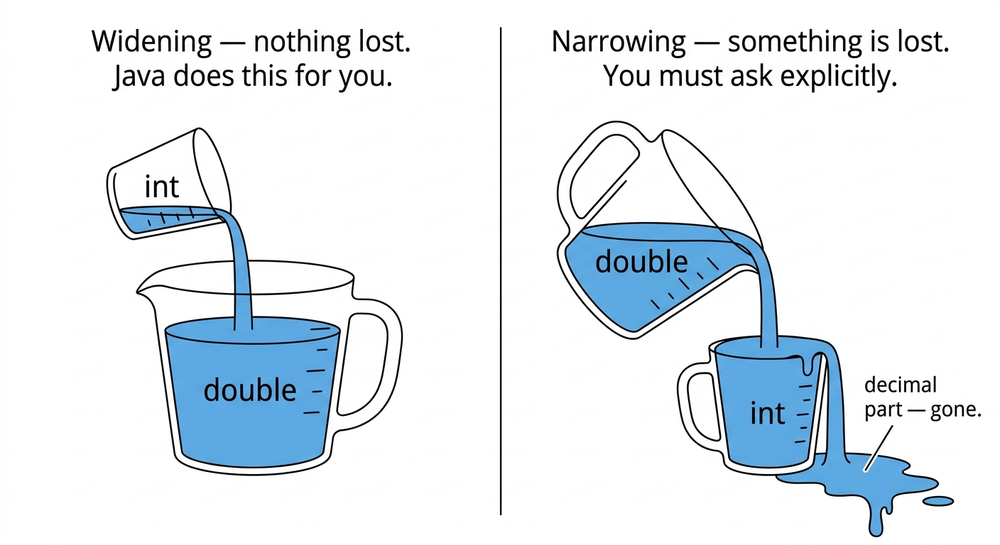

Explain why type conversion is sometimes necessary, even when types were chosen carefully
Distinguish between widening (automatic) and narrowing (explicit) conversion
Predict the result of a mixed-type arithmetic expression
Cast between int and double using (int) and (double)
Explain why (double) a / b and (double)(a / b) produce different results
Explain that (int) truncates a decimal value rather than rounding it
Why Can’t We Just Choose the Right Type Once?
You might be thinking: “If I pick the right type from the start, why would I ever need to change it?”
That is a fair question. Here is why it comes up anyway:
Situation 1 — Input is always a String
IO.readln always produces a String. To do arithmetic with what the user typed, we had to convert it with Integer.parseInt. That is type conversion.
Situation 2 — Arithmetic produces the wrong type
int a =7;int b =2;IO.println(a / b);// prints 3 — not 3.5
Both values are int, so Java does integer division. To get 3.5, we need to involve a double — but our variables are int. We need to convert.
Situation 3 — A result needs to be stored in a different type
double average =8.75;int display = average;// ERROR — Java refuses
You cannot store a double in an int without explicitly saying so.
Type conversion happens whenever two parts of a program disagree on what type a value should be.
The Starbucks Cup Analogy
Remember our Starbucks cup analogy from the variables lecture?
A tall cup (small) ↔︎ int A venti cup (large) ↔︎ double
Pouring tall → venti
(small into large)
All the coffee fits. The cup just is not full.
Nothing is lost.
This is widening. Java does it automatically.
Pouring venti → tall
(large into small)
The tall cup cannot hold everything. Some coffee spills.
Something is lost.
This is narrowing. Java makes you do it explicitly.

Widening — int to double
Going from int to double is always safe — a whole number fits perfectly inside a decimal type.
Java does this automatically, without any special syntax.
Example 1 — Assigning an int to a double variable:
int score =95;double precise = score;// automatic — precise is now 95.0IO.println(precise);// prints: 95.0
Example 2 — Mixing int and double in an expression:
int a =7;double b =2.0;IO.println(a + b);// prints: 9.0 (a is widened automatically)IO.println(a * b);// prints: 14.0IO.println(a / b);// prints: 3.5
Example 3 — Passing an int to something expecting a double:
double x =10;// fine — 10 becomes 10.0double y =4+3;// fine — 7 becomes 7.0
Note
Widening never loses information. 95 becomes 95.0 — the value is identical, just represented differently.
Narrowing — double to int
Going from double to int may lose the decimal part.
Java refuses to do this automatically — you must ask explicitly.
double price =9.99;int dollars = price;// ERROR — Java will not compile thisint dollars =(int) price;// OK — you asked explicitly; dollars is 9
The (int) before a value is called a cast. It means: “convert this to an int.”
The most important thing to know about (int):
It truncates — it drops the decimal part, no matter how large it is.
IO.println((int)3.1);// 3 — not surprisingIO.println((int)3.5);// 3 — not 4!IO.println((int)3.9);// 3 — not 4!IO.println((int)-3.7);// -3 — toward zero, not -4
Warning
(int) does not round. It chops off everything after the decimal point.
3.9 does not become 4 — it becomes 3.
More examples:
double temperature =98.6;int rounded =(int) temperature;// 98 — the .6 is goneIO.println(rounded);// prints: 98double gpa =3.85;int display =(int) gpa;// 3IO.println(display);// prints: 3
Mixed-Type Expressions
When int and double values appear together in an expression, Java widens the int to double before computing.
The rule: if either operand is a double, the result is a double.
IO.println(7/2);// 3 — both int → integer divisionIO.println(7/2.0);// 3.5 — one is double → decimal divisionIO.println(7.0/2);// 3.5 — one is double → decimal divisionIO.println(7.0/2.0);// 3.5 — both double → decimal division
The only case that gives 3 is when both sides are int.
With variables:
int a =7;int b =2;IO.println(a / b);// 3 — both intIO.println(a /2.0);// 3.5 — 2.0 is doubleIO.println((double) a / b);// 3.5 — a is cast to double first
Note
This is why 7 / 2 surprised you last lecture. Now you know the fix: make one operand a double.
Casting Placement Matters
Where you place the cast changes the result completely.
int a =7;int b =2;
Case 1: cast a first, then divide
(double) a / b
Step by step:
(double) a → 7.0 (a is widened to double)
7.0 / b → 7.0 / 2 (b is widened automatically)
→ 3.5 ✓
Case 2: divide first, then cast
(double)(a / b)
Step by step:
a / b → 7 / 2 (both int → integer division)
→ 3 (decimal part already lost)
(double) 3 → 3.0 (too late — the .5 is already gone)
Warning
(double)(a / b) does not fix integer division. The division already happened as integer division. You get 3.0, not 3.5.
The rule: cast before the division, not after.
double result1 =(double) a / b;// 3.5 ✓double result2 =(double)(a / b);// 3.0 ✗ — too latedouble result3 = a /(double) b;// 3.5 ✓ — also works
Code Example — Grade Percentage
Problem: Ask the user how many points they earned and how many were possible. Calculate and print their percentage.
The code:
Java
void main() {
// input
int earned = Integer.parseInt(IO.readln("Points earned: "));
int possible = Integer.parseInt(IO.readln("Points possible: "));
// processing
double percentage = (double) earned / possible * 100;
String output = "Your percentage: " + percentage;
// output
IO.println(output);
}
Terminal
Trace with earned = 43, possible = 50:
Step
Expression
Result
Cast
(double) 43
43.0
Divide
43.0 / 50
0.86
Multiply
0.86 * 100
86.0
Sample run:
Points earned: 43
Points possible: 50
Your percentage:
86.0
Warning
Without the cast: 43 / 50 → 0 (integer division) → 0 * 100 → 0. The cast is not optional.
Common Mistakes
1. Forgetting to cast before integer division
int a =3;int b =4;double result = a / b;// 0.0 — integer division happened firstdouble result =(double) a / b;// 0.75 ✓
2. Casting too late — after integer division already happened
int a =7;int b =2;double result =(double)(a / b);// 3.0 — division was already integerdouble result =(double) a / b;// 3.5 ✓
3. Expecting (int) to round
double score =89.9;int display =(int) score;IO.println(display);// prints 89 — not 90
(int) always truncates. 89.9 → 89.
4. Expecting Java to narrow automatically
double price =4.99;int dollars = price;// ERROR — Java refuses; you must write (int) price
Worksheet
Problem 1 — Predict the output. Work through each line on paper before running it.